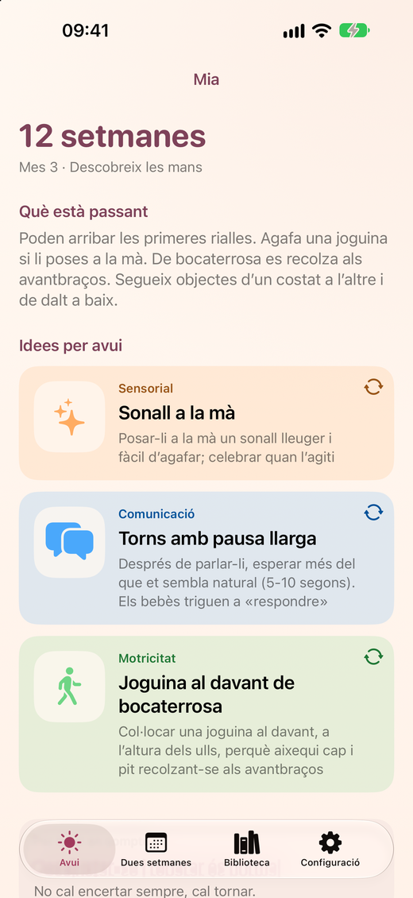
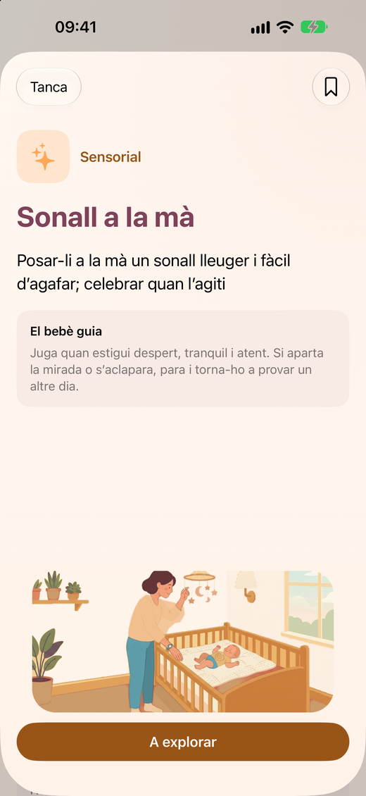
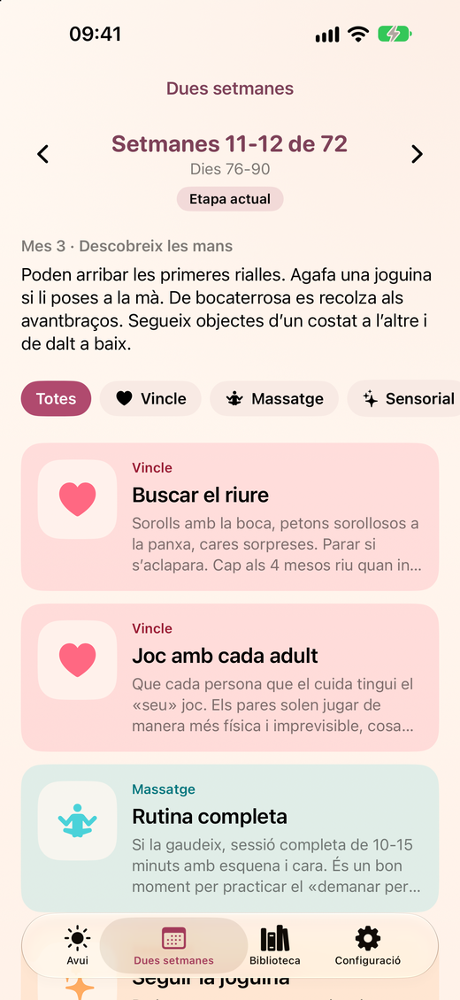

Baby & Bond
Juga i connecta amb el bebè
Baby & Bond ajuda mares i pares a interactuar amb el seu bebè, a crear vincle i a fer que el seu bebè sigui feliç. Cada dia et proposa idees senzilles per jugar, mirar i estar junts, adaptades a l’etapa exacta del teu bebè, de 0 a 18 mesos.



Què ofereix
- Cada dia, tres idees per jugar amb el teu bebè, de temes diferents: vincle, massatge, sensorial, motor, comunicació i autonomia.
- 36 etapes de dues setmanes, de 0 a 18 mesos.
- Edat corregida per a bebès prematurs i suport per a bessons.
- Una guia per consultar: principis, senyals del bebè, massatge infantil, seguretat i pantalles, i fonts d’informació.
- Disponible en català, español, English i français.
- Sense comptes, sense anuncis i sense recollida de dades.
Gratis per provar, un únic pagament per tenir-ho tot
Gratis: una de les tres idees de cada dia, l’etapa actual, la guia de seguretat i fins a 3 activitats desades. Amb una compra única, sense subscripció, desbloqueges totes les etapes, les tres idees diàries, tota la guia i les activitats desades sense límit.
Baby & Bond és una app de joc i vincle. No és pediàtrica ni avalua el desenvolupament: els dubtes de salut o de desenvolupament es consulten amb el pediatre o la pediatra.
Tens dubtes o suggeriments? Visita la pàgina de suport.